camera · body · signal · memory
Ten fingers hold ten notes. Curl one and its light falls like dust. In Aftervoice, the room carries the last word.
pointer field online · inputs disarmed
Camera and microphone access are managed by your browser.
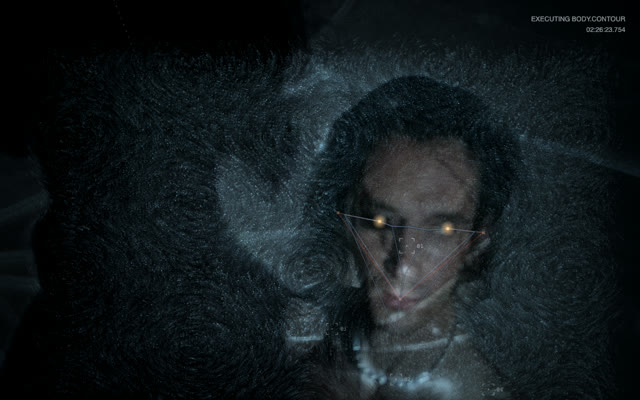
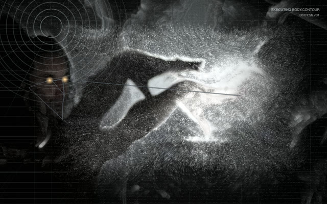
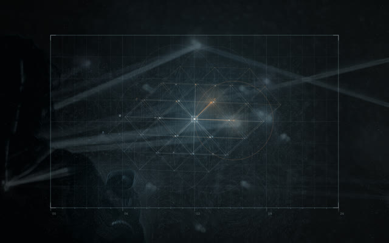
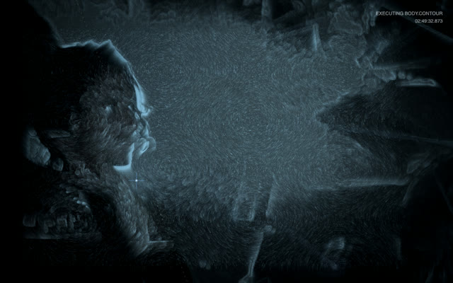
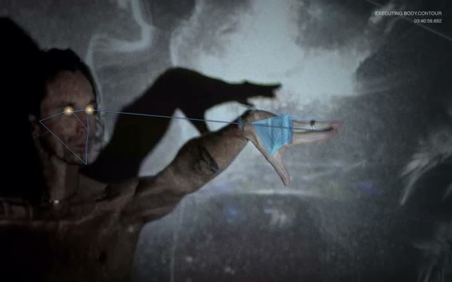
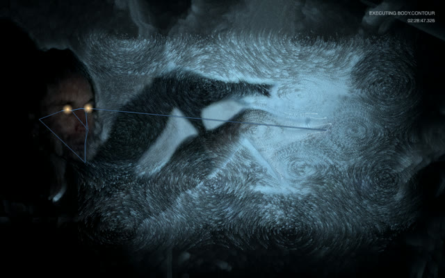
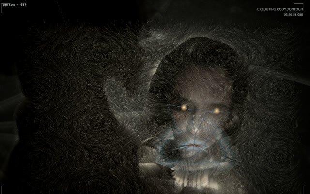
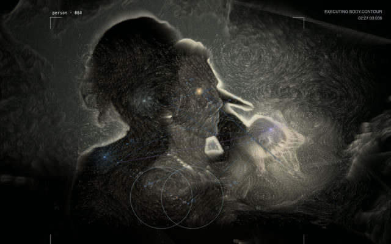
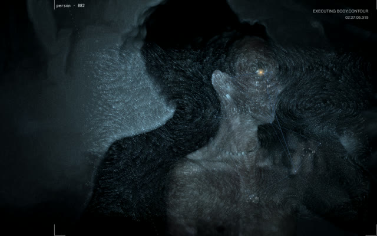
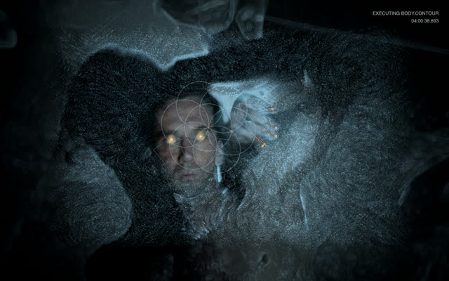
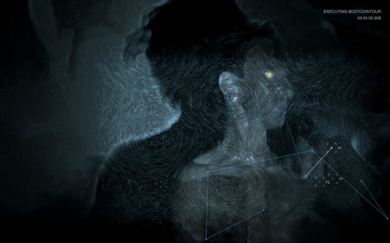
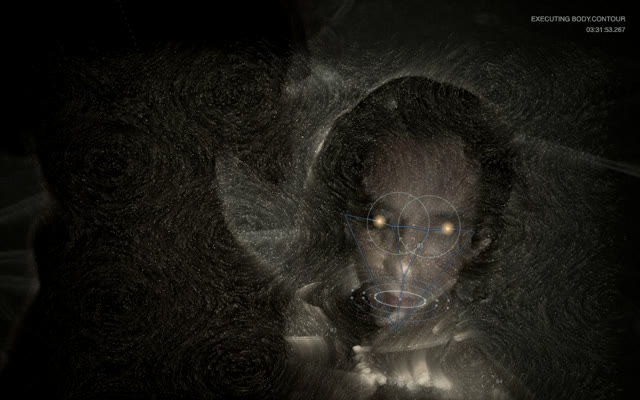
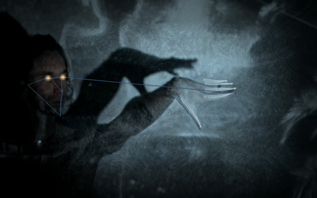
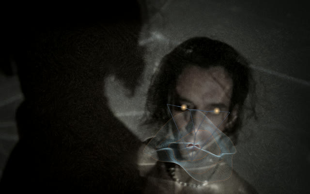